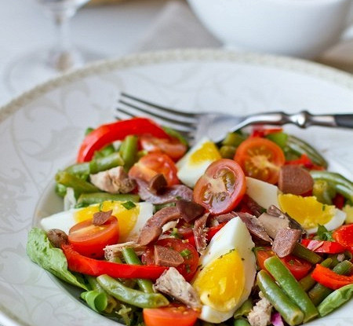
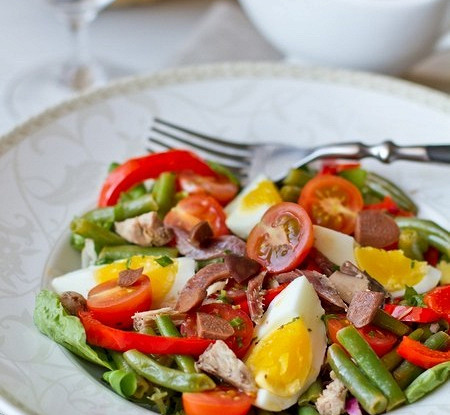

Лазанья з фаршем
Лазанья з фаршем
Час приготування - 80 хв.
 Канелоні з м'ясом
Канелоні з м'ясом
Час приготування - 100 хв.
Салат Нісуаз
Час приготування - 20 хв.
Кулінарія Кулінарія |
|
|
Салат НісуазЧас приготування - 20 хв. |
Молекулярна кухняМолекулярна кухня – це нове слово в кулінарії. Усі про неї чули, але достеменно не знають що це. Одні стверджують, що якщо там присутні хімічні процеси, то це шкідливо. Інші, більш усвідомлені у цій справі, знають, що це приготування їжі за допомогою різних фізико-хімічних процесів і жодної шкоди організму не завдає. Засновниками молекулярної кухні вважаються хімік Ерве Тис та фізик ядерник Ніколас Курті. Про такий вид гастрономії почули ще в 1992 роках і з того часу молекулярна кухня стала невід’ємною частиною багатьох відомих та дорогих ресторанів.Страви молекулярної кухні готуються не для того, щоб досита нагодувати людину, а довести всім, що приготування їжі може бути мистецтвом. Замість звичайної сковорідки та каструлі, кулінари молекулярної кухні використовують центрифугу, сухий лід, азот, вакуумне приготування їжі. А замість приправ – спеціальні компоненти, такі як агар-агар, мальтодекстрин, ксантанову смолу, лактат кальцію тощо. Завдяки цьому можна отримати з будь якого продукту піну, морозиво чи гель. Ми представили вам один із таких рецептів. |
| Рецепти
Рецепти Рецепти |
Tel.: +380 486 436 467 |
| Template design by Kravchenko Viktoria |